Works
制作実績
広報職での実務実績と、Web制作の個人制作作品です。
バナー制作
ターゲット別に5点を掲載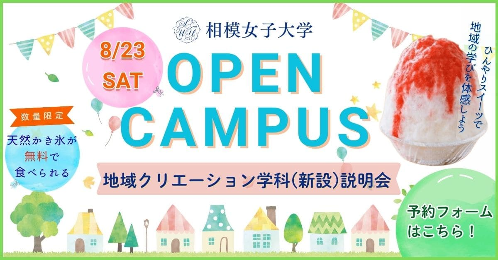
オープンキャンパス告知
夏のお祭り感を親しみのある優しい色合いで、アクセントとして新学科イベントのかき氷を大きく入れました
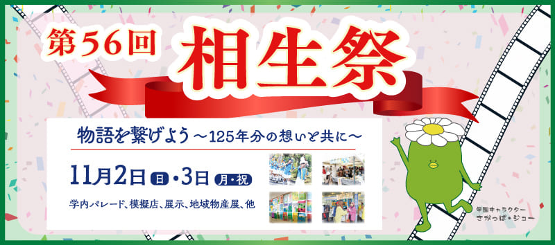
文化祭告知
生徒が描いたポスターを原案に、世界観を引き継いだバナーとして構成
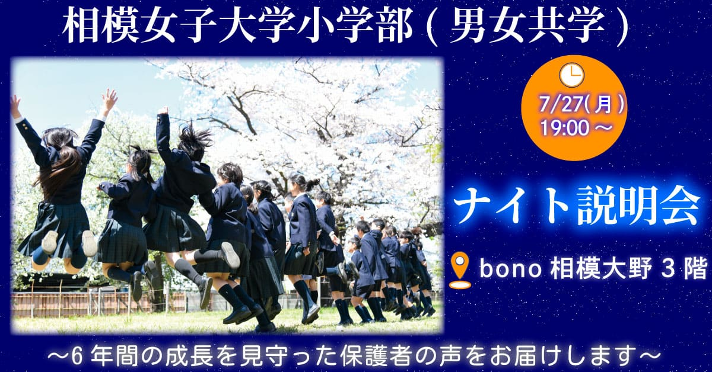
小学部学校説明会告知(Web広告)
保護者向け・夜間開催のため落ち着いた背景に、充実した学校生活が伝わる写真を採用。前回比3倍のクリック数を獲得し、来場者の半数がこの広告経由でした
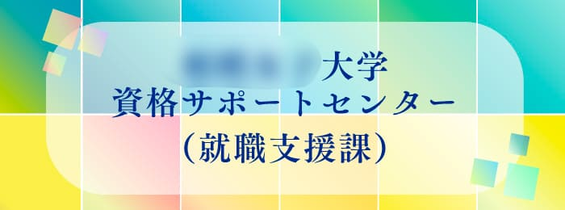
就職支援課リンクバナー
指定の「ビタミンカラー」をグラデーションにして視認性を確保。四角のモチーフで光を演出
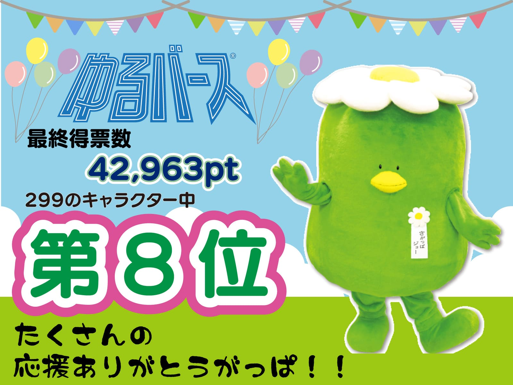
学園キャラクターバナー
ゆるキャラグランプリの結果告知。指定フォントと順位を目立たせ、幅広い世代への訴求としてパステルカラーで親しみやすさを演出
新年の挨拶バナー
学園カラーと学園の花・マーガレットを使用。安心感を意識し人物写真を大きく配置、清潔感の伝わるフォントを選定
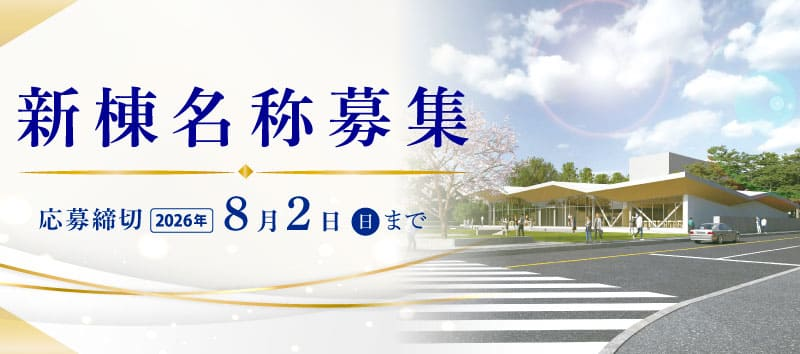
新棟名称募集バナー
高級感を求められた依頼に応え、金のラインと明朝体で構成。1,200件の応募をいただきました
リーフレット制作
3点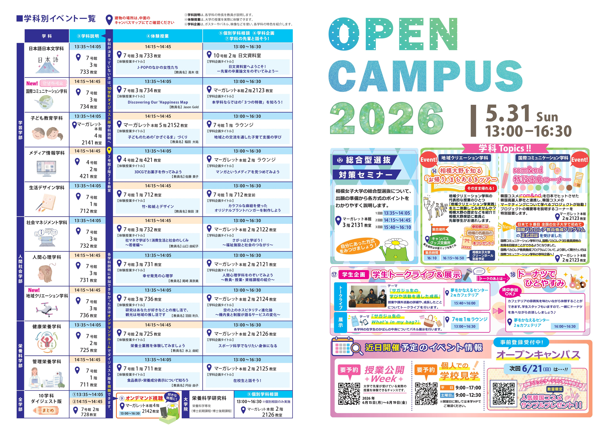
オープンキャンパスリーフレット
2026/5/31
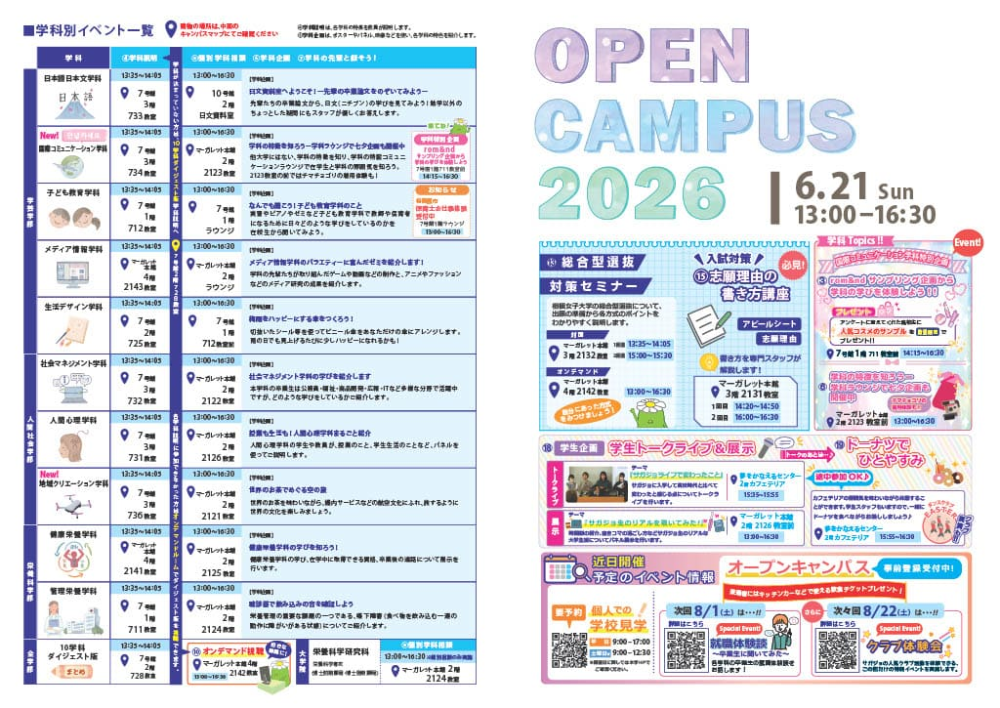
オープンキャンパスリーフレット
2026/6/21
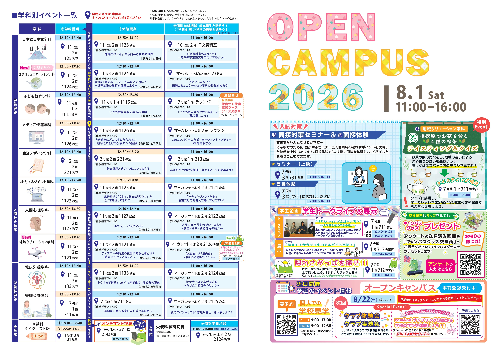
オープンキャンパスリーフレット
2026/8/1
CMSお知らせページ
wordpress/Artice cms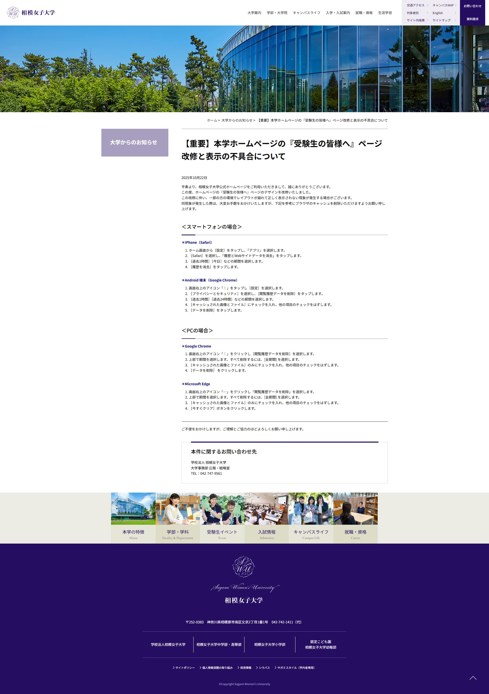
表示不具合のお知らせ
緊急性の高い内容のため装飾を最小限にし、対処法までの到達スピードを優先
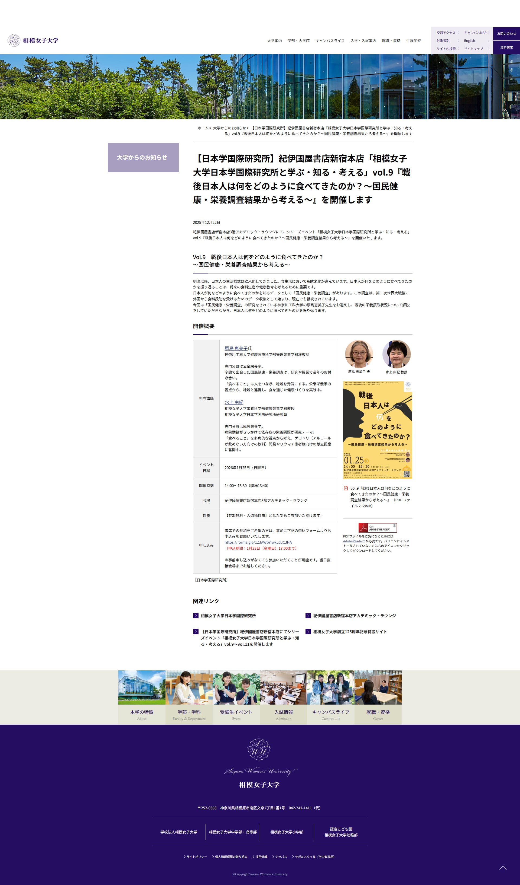
講演会のご案内
チラシから講師の顔写真を抜き出して掲載し、概要は表組みで整理。詳細は別リンクへ誘導
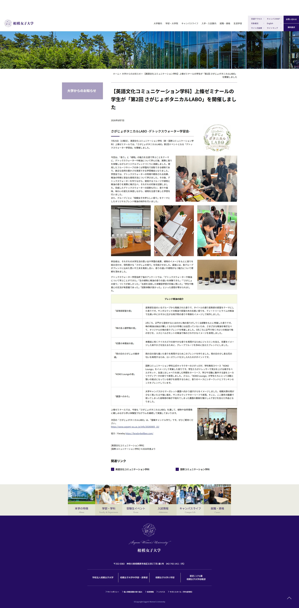
さがじょボタニカルLABO 開催報告
写真を多めに配置し、活動内容が伝わるカットをメインに選定。ブレンド精油紹介は表形式で構成
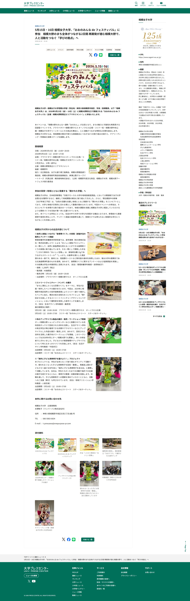
大学プレスセンター掲載記事
プレスリリース原稿をもとにWordPressで構成。文章中心の原稿を、写真中心の見やすい形に再構成
個人制作
架空サイト 3点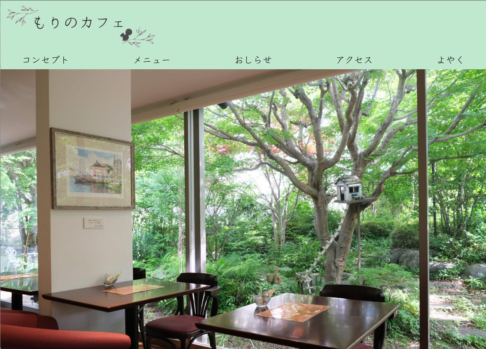
もりのカフェ
20〜40代の働く男女に向けた、癒しのカフェサイト
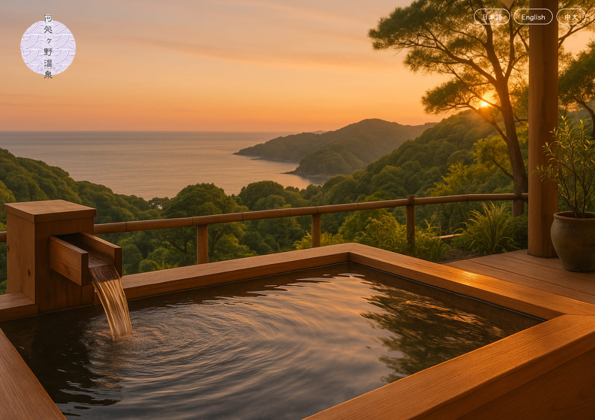
40〜50代に向けた温泉旅館サイト
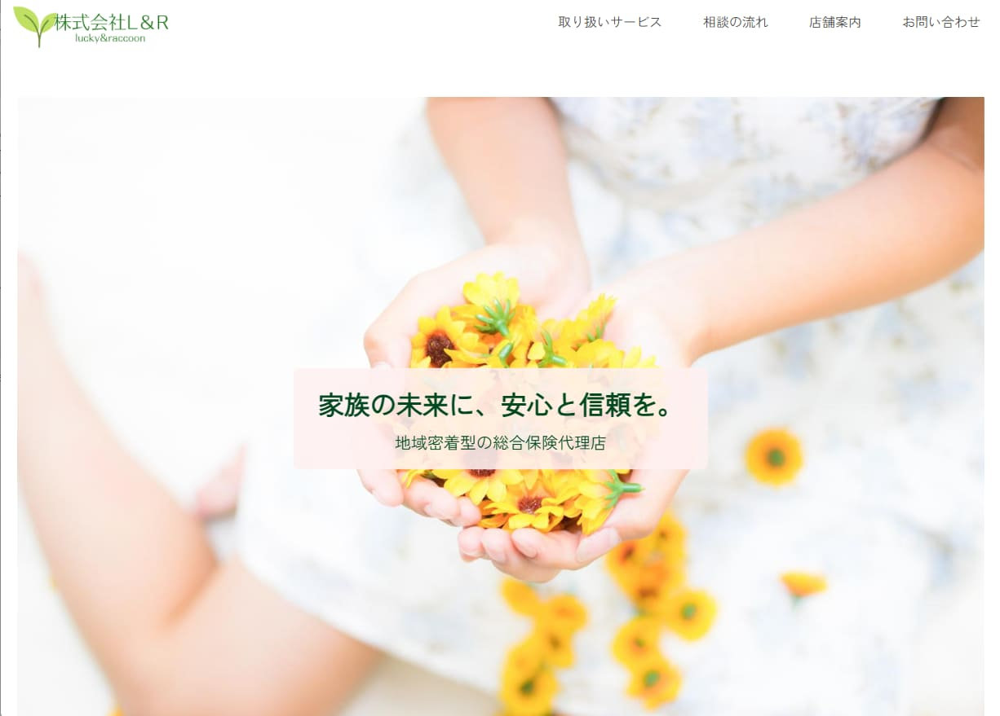
株式会社L&R
地域密着型・保険代理店のコーポレートサイト
About
自己紹介
「欲しい」に、気づける人でありたい。
学校広報として、バナーやリーフレット、Web広告、CMS運用など、様々な立場の相手に向けてデザインをしてきました。
受験生には期待感を、保護者には安心感を。同じ情報でも、届ける相手によって伝え方は変わります。「相手が本当に欲しいものは何か」を考えることを、何より大切にしてきました。
最近はWeb制作の基礎も個人で学び、構築から運用まで、一貫して形にできる力を広げています。
誠実に、丁寧に。相手の気持ちに寄り添うデザインを、これからも続けていきたいです。
保有資格
- ウェブデザイン技能検定2級
- Googleアナリティクス認定資格